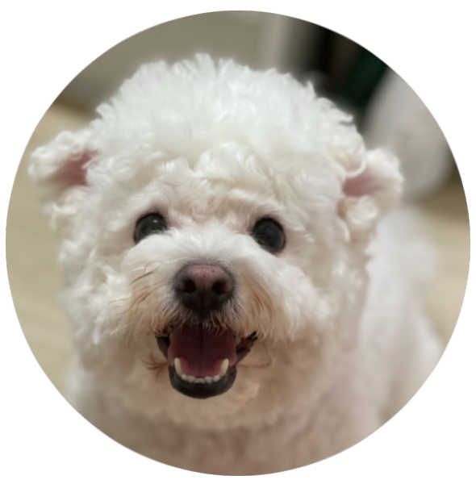
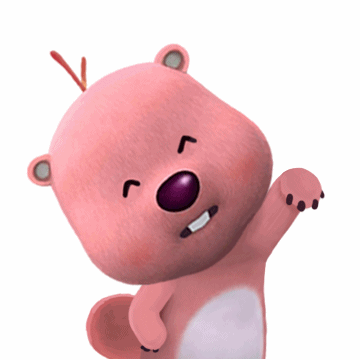
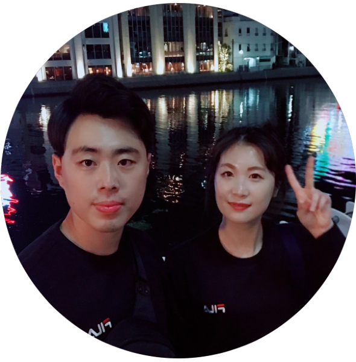

루피를 좋아하는
25기 신혜리입니다 😍



" 안녕하세요! 저는 웹 프론트 개발자가 꿈인 신혜리입니다! "
아직 스킬도 부족하고, 웹에 대한 지식이 많이 없어서 허접해 보이지만 열심히 노력해서 만들었습니다 ㅠㅜ 예쁘게 봐주세요!
음.. 자기소개를 어떻게 디자인할지 많이 고민했는데, 가장 좋아하고 '나'답다고 생각하는것들 보여드리려합니다. 사실 저를 표현하는 단어들은 더 많은데.. 나머지는 오프라인으로...🤣
저는 게임을 가리지않는 덕후입니다!
게임하는 시간이 너무 즐겁고 설레요!
의외로 요리도 좋아합니다
제가 한 요리가 "맛있다!"라는 말을 들으면 기뻐요
한마디로 정리하겠습니다
동물이 좋아서 축산과를 갔습니다
잔망루피를 좋아합니다
펀딩한 굿즈를 보면 행복만땅!🤩
개발덕후를 꿈꾸고있습니다!
인터렉티브한 웹을 보면 너무 신기하고 궁금해요